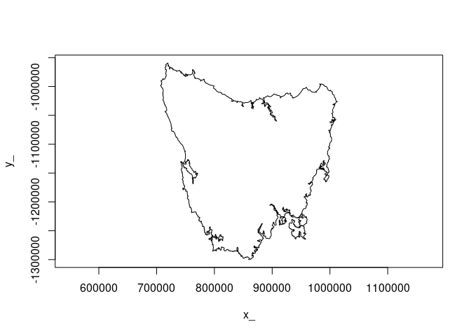

The goal of area is to calculate areas, allow control over how that happens, and illustrate how it works.
Very much work in progress.
Please, do not use this for your land surveying contract.
Installation
You can install the development version from GitHub with:
# install.packages("devtools")
devtools::install_github("hypertidy/area")Straightforward tools
The area package is written to allow easy to use calculations for developing packages. It’s similar to the traipse package which was created to leverage the grouping mechanisms of the tidyverse for common tracking data calculations.
library(area)
polygon_area(cbind(c(0, 1, 1, 0, 0),
c(0, 0, 1, 1, 0)))
#> [1] 1
triangle_area(cbind(c(0, 1, 1, 1, 0, 0),
c(0, 0, 1, 1, 1, 0)))
#> [1] 0.5 0.5There’s an inbuilt data set with a path of Tasmania’s outline.
index <- 4423 ## explain later
idx <- c(tas$S[1], tas$S[1:index,2], 1)
plot(tas$P[idx, ], type = "l", asp = 1)
polygon_area(tas$P[idx, ])/1e6
#> [1] 61672.74
sf::st_area(sf::st_polygon(list(tas$P[idx, ])))/1e6
#> [1] 61672.74
library(dplyr)
library(area)
calc_area <- function(df) {
area <- df %>% mutate(row = row_number()) %>%
group_by(multipolygon_id, polygon_id, linestring_id) %>%
arrange(row) %>%
summarize(area = polygon_area(cbind(x, y))) %>%
ungroup() #%>%
area %>% mutate(area = area,
hole = c(-1, 1)[(pmax(c(1, diff(multipolygon_id)), c(1, diff(polygon_id))) == 1) + 1])
}
xsf <- silicate::inlandwaters
df <- sfheaders::sf_to_df(xsf)
(mmarea <- calc_area(df))
#> `summarise()` has grouped output by 'multipolygon_id', 'polygon_id'. You can
#> override using the `.groups` argument.
#> # A tibble: 189 × 5
#> multipolygon_id polygon_id linestring_id area hole
#> <dbl> <dbl> <dbl> <dbl> <dbl>
#> 1 1 1 1 2203380098. 1
#> 2 2 1 1 103039733. 1
#> 3 3 1 1 750145539388. 1
#> 4 3 1 2 100909770. -1
#> 5 3 1 3 2203380098. -1
#> 6 3 1 4 45585186. -1
#> 7 3 1 5 89780792. -1
#> 8 3 1 6 110755146. -1
#> 9 3 1 7 59287239. -1
#> 10 3 1 8 66189369. -1
#> # … with 179 more rows
sum(mmarea$area * mmarea$hole)
#> [1] 1.923706e+12
sum(sf::st_area(xsf))
#> old-style crs object detected; please recreate object with a recent sf::st_crs()
#> old-style crs object detected; please recreate object with a recent sf::st_crs()
#> old-style crs object detected; please recreate object with a recent sf::st_crs()
#> 1.923706e+12 [m^2]Straightforward?
Well - ha ha - we will need some ease of use here, and some speed ups - but we aren’t restricted to one in-memory format, we have the area of every component part to use as we wish (the grouping tells us about holes and multipolygons), we can tell the orientation of the polygon or triangle and get its area, and when we have the right tools we’ll only be using R and C++. Oh and we can calculate with triangles stored compactly.
(a <- triangle_area(mm_tri$P[t(mm_tri$T), ]))
#> [1] 0.03000 0.06900 0.03000 0.02000 0.05000 0.10000 0.05500 0.03000 0.03000
#> [10] 0.03000 0.03000 0.14550 0.05145 0.04500 0.11250 0.06250 0.06800
sum(a)
#> [1] 0.95895
## that is the area of the silicate::minimal_mesh (but the hole is included)The key motivation here is flexibility and working with triangles.
Performance is compelling, compare silicate::tri_area() to this C++ version
library(silicate)
#>
#> Attaching package: 'silicate'
#> The following objects are masked _by_ '.GlobalEnv':
#>
#> inlandwaters, minimal_mesh
#> The following object is masked from 'package:stats':
#>
#> filter
tas_tri <- RTriangle::triangulate(tas)
trxy <- tas_tri$P[t(tas_tri$T), ]
dim(trxy)
#> [1] 18291 2
rbenchmark::benchmark(R = {a <- tri_area(trxy)}, cpp = {b <- triangle_area(trxy)})
#> test replications elapsed relative user.self sys.self user.child sys.child
#> 2 cpp 100 0.065 1.000 0.050 0.016 0 0
#> 1 R 100 0.296 4.554 0.233 0.064 0 0
sum(abs(a - b))
#> [1] 0.0004653583
mean(c(sum(a), sum(b)))
#> [1] 61672735794Code of Conduct
Please note that the area project is released with a Contributor Code of Conduct. By contributing to this project, you agree to abide by its terms.